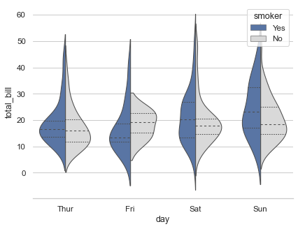

Grouped violinplots with split violins¶
seaborn components used: set_theme(), load_dataset(), violinplot(), despine()
import seaborn as sns
sns.set_theme(style="whitegrid")
# Load the example tips dataset
tips = sns.load_dataset("tips")
# Draw a nested violinplot and split the violins for easier comparison
sns.violinplot(data=tips, x="day", y="total_bill", hue="smoker",
split=True, inner="quart", linewidth=1,
palette={"Yes": "b", "No": ".85"})
sns.despine(left=True)